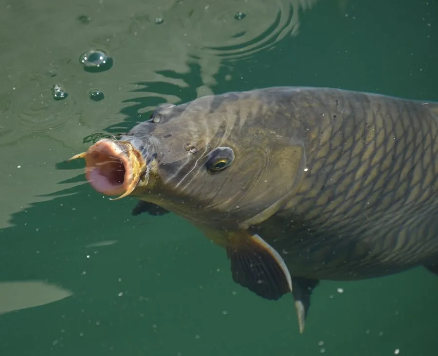

鱼类 · 动物界
锦鲤 Cyprinus carpio

由鲤鱼选育而成的观赏鱼，体色红白黑金相间，寓意吉祥，在日本被培育出百余个品种，被称为“水中活宝石”。
- 分类
- 门脊索动物门纲硬骨鱼纲目鲤形目科鲤科属鲤属
- 栖息环境
- 人工池塘、庭院水体和公园湖泊，喜水质清澈、溶氧充足的环境
- 地理分布
- 全球人工饲养，源自中亚与中国，日本培育出主要品种
- 保护级别
- 暂无评估；中国未列入国家重点保护野生动物名录（人工选育品种）
物种志
锦鲤是普通鲤鱼的观赏品种，体呈纺锤形而略显粗壮，口下位，生有两对须。体色由红、白、黑、橙、金黄等色斑组合而成，常见品种有红白、大正三色、昭和三色、黄金和丹顶等。成鱼体长一般 40–80 cm，大型个体可超过 1 m、体重 10 kg 以上，鳞片大而明亮，游动时体色在阳光下格外醒目。
锦鲤是杂食性底栖鱼类，吃水生昆虫、螺蛳、藻类、植物种子和人工饲料，性格温和，适应力强，可在 2–30 ℃ 的水温中生活。它源自中亚和中国，后在日本经过数百年选育形成完整的品种体系，被视为吉祥和长寿的象征，如今在全球的庭院池塘和公园水体中广泛饲养。繁殖期在春季，雌鱼把卵产在水草和池壁上，每尾可产数十万粒卵。作为人工选育的观赏品种，锦鲤没有IUCN 的正式评估，中国也未将其列入国家重点保护野生动物名录。
形态与习性
- 食性杂食性，取食水生昆虫、螺蛳、藻类、种子和配合饲料
- 体长常见 40–80 cm，大型个体可超过 1 m
- 体重大型个体可达 10 kg 以上
- 寿命通常数十年，有记录超过 200 年
- 繁殖春季产卵，每尾雌鱼可产数十万粒卵
- 品种日本培育出百余个品种，以红白、大正三色、昭和三色最著名
趣味知识
- 锦鲤的年龄可以通过鳞片上的年轮判断，原理和看树木年轮一样。
- 日本名鲤“花子”据记载活了 226 年，不过这一年龄后来受到研究者的质疑。
- 锦鲤的色斑由色素细胞分布决定，同一窝鱼苗长大后花纹各不相同。